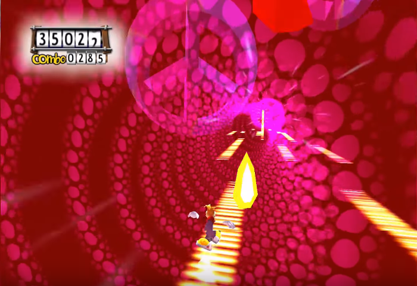

Drones est la préface du jeu que j'ai designé pour le concours de l'ENJMIN dont le thème etait lié à une série de documentaire d'ARTE. J'ai donc décidé de créer un jeu narratif ou le joueur incarne un drone qui parcourt la Terre dans une ambiance post Apocalyptique pour en apprendre plus sur le declin de la Terre. Lors de ses découvertes le joueur apprendra que tout cela est lié à une société qui a fait fortune à l'aide de moyen marketing plus ou moins ethique. Le jeu se jouerai à l'aide d'un joystick type simulateur d'avion et l'HUD du joueur serait à l'image de l'interface présente dans Metroid Prime mais avec des données typiques des drones (Altitude, vitesse, relevé sonar).
Don't panic est ma prochaine idée de jeu. Il s'agira d'un jeu crée à l'aide du moteur Unity dont le but sera de sauvé une cargaison de metaux de la main de pirates de l'espace. Pour cela il suffira d'eviter des obstacles qui defillent à l'ecran.
Cependant la difficulté sera présente car le joueur devra utiliser un capteur cardiaque et la vitesse des obstacles augmentera en fonction de la vitesse des battements du coeur du joueur. De plus tout l'univers autour du joueur le poussera à commettre l'erreur de paniquer
à cause de la musique qui ne cessera d'accelerer ainsi que des changements de couleur de fond.
Le jeu s'inspire du jeu Rayman 3 vis a vis de ses scenes de slider Funkyboard et de l'ambiance psychédelique qui s'en degage
